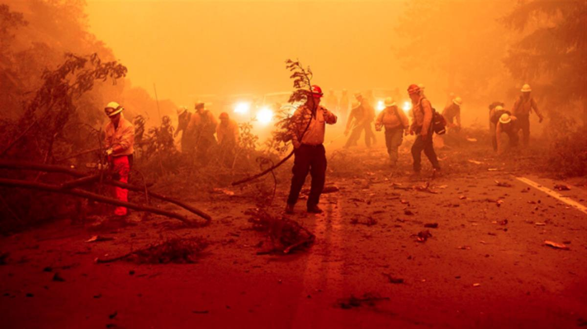

Doctors have warned of an 'impending health catastrophe'
COP26: Urgent climate action needed to avert 'impending health catastrophe', doctors warn
A new report from the World Health Organisation calls on nations to start decisive action that will limit global warming and prevent millions of deaths every year.
News reporter @megbaynes
Tuesday 12 October 2021 17:24, UK
Doctors and medical professionals have warned urgent action on climate change is needed to avoid an 'impending health catastrophe'.
As world economies begin to tackle their recovery from COVID-19, a special report from the World Health Organisation - launched in the run-up to the COP26 climate conference - spells out some of the inseparable links between climate and health.
The report says the next few years are a 'crucial window' for governments to integrate health and climate policies within their coronavirus recovery packages and international climate commitments.

Image:Scientists have warned extreme weather events pose a risk to global health outcomes. Pic: APWHO Director General Dr Tedros Adhanom Ghebreyesus said: 'The COVID-19 pandemic has shone a light on the intimate and delicate links between humans, animals and our environment.
'The same unsustainable choices that are killing our planet are killing people.'
The WHO is calling on countries to commit to decisive action in every sector to limit global warming - including energy, transport, nature, food systems and finance. It argues public health benefits will 'far outweigh the costs'.
It comes as research found air pollution from burning fossils fuels causes 13 deaths per minute worldwide.
'It has never been clearer that the climate crisis is one of the most urgent health emergencies we all face,' said Dr Maria Neira, WHO director of environment, climate change and health.
COP26 climate change conference: Future of our planet depends on decisions made in run up to summit
'Bringing down air pollution to WHO guideline levels, for example, would reduce the total number of global deaths from air pollution by 80% while dramatically reducing the greenhouse gas emissions that fuel climate change.'
Meanwhile, a shift to plant-based diets could not only reduce global emissions 'significantly' but also avoid up to 5.1 million diet-related deaths a year by 2050.
The report lists ten recommendations on health and climate change.
THE TEN RECOMMENDATIONS ON HEALTH AND CLIMATE CHANGE:
-
Commit to a green recovery from COVID-19
-
Place health and social justice at the heart of UN climate talks
-
Prioritise climate interventions with the largest health, social and economic gains
-
Build climate-resilient and environmentally friendly health systems
-
Create energy systems that protect and improve climate and health
-
Promote sustainable urban design and transport systems, with priority for walking, cycling and public transport
-
Protect and restore natural systems
-
Promote healthy, sustainable and resilient food systems
-
Finance a healthier, fairer, greener future to save lives
-
Listen to the health community and prescribe urgent climate action
It has been launched at the same time as an open letter, signed by more than two-thirds of the global health workforce - 300 organisations representing at least 45 million health professionals - calling for national leaders and COP26 delegates to step up climate action.
'Wherever we deliver care, in our hospitals, clinics and communities around the world, we are already responding to the health harms caused by climate change,' the letter said.
'We call on the leaders of every country and their representatives at COP26 to avert the impending health catastrophe by limiting global warming to 1.5 degrees Celsius, and to make human health and equity central to all climate change mitigation and adaptation actions.'
Extreme weather events already lead to death and illness, with climate change undermining many of the social determinants for good health - such as livelihoods, equality and access to health care.
Changes in weather and climate threaten food security and have driven up food, water and vector-borne diseases - such as malaria - while climate change also negatively affects mental health.
In August, a landmark climate report warned heatwaves, flooding and droughts will become more frequent and intense as the world is set to hit the climate warming limit within the next 20 years.
SOURCE: SKY NEWS